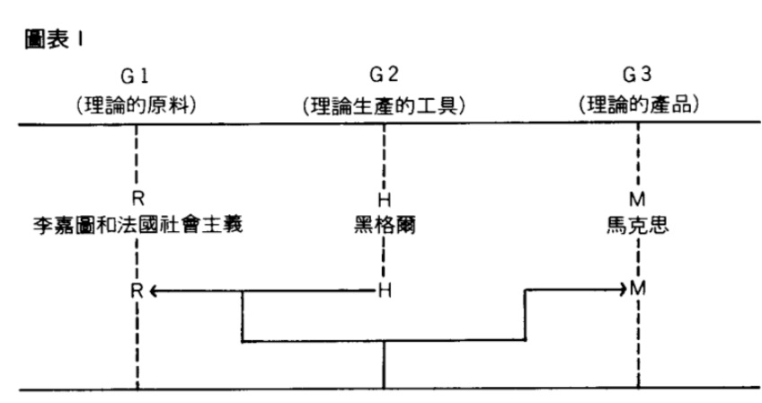
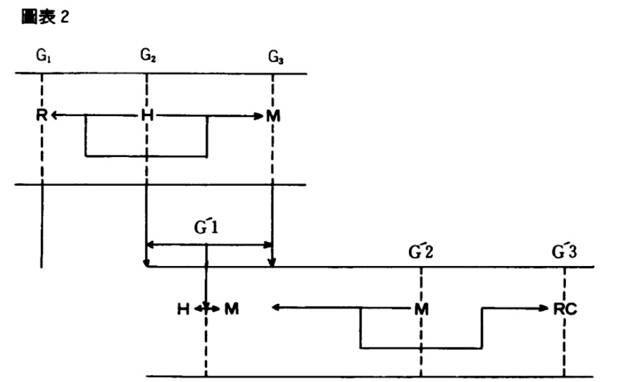

中文马克思主义文库
->
路易・阿尔都塞
->
列宁和哲学（1971）
4．
马克思与黑格尔的关系
[1]
（一九六八年一月）
我要感谢伊波利特先生肯邀请我到他主持的研究班上来，我非常感激他。伊波利特先生的成就很多，单是他有勇气翻译黑格尔的著作和倡议出版胡塞尔的著作这一项，就将载入法国哲学的史册。他使法国哲学摆脱了自从法国革命以来一直宰制着它的反动传统，我说的正是
宰制着
，这个反动传统由于拉舍利埃、博格森和布伦希维克的学术统治而得到加强。在这一传统中，法国的沙文主义采取了最简单的愚蠢形式：无知。伊波利特先生有勇气与这种无知作斗争。我们能够知道黑格尔，并且通过黑格尔开始了解马克思与黑格尔之间存在着距离，都要归功于他。我在这里不谈法国哲学为马克思所保留的命运。认为黑格尔智力上迟钝的布伦希雅克，把马克思和列宁看作是在哲学上无足轻重的人物。伊波利特先生也有勇气谈论马克思，谈论弗洛伊德，谈论那些在学院派资产阶级哲学眼中的伟大
罪人
。
现在每一个人多少都知道这种情况了。但是它还是值得说一说的。
让我再补充一点，我还有一件事要感激伊波利特先生，这一点是他猜想不到的。如果说我能够瞥见马克思哲学著作的革命理论规模，那要归功于一个很亲密的朋友马丹（Jacques Martin），他在五年前去世了。马丹曾在巴黎沦陷期间有幸听到伊波利特先生（当时是巴黎高等师范学校
文科预备班教师
）评论《精神现象学》（Phenomenology of Mind）的某些章节。从我所听说的看来，请相信我，在那个特殊时期，这决非一般的评论。伊波利特先生当时说的话，帮助了他一些学生像康德说的那样「在思想中」，也就是在政治中认清了方向。伊波利特先生肯定已经忘记他当时说的话了：但不是每个人都忘记了这些话。我在这里可以作证。这似乎违反常识，特别是金融家和律师的常识，有许多大部头著作都消失得无影无踪了，但是有少数话语却留下来了。毫无疑问，这是因为这些话语已经被写在生活和历史中。
我想要就马克思与黑格尔的关系提出几个简略的论题。
我拒绝辩术和产婆术，不管是苏格拉底（Socratic）的还是现象学的。在哲学中，真正的开端是结局。我将从结局开始。我将把我牌摊在桌面上，使大家都能看到。这些牌就是这个样子：它们带有
马克思列宁主义
的标记。以这种方式摊出来，它们自然会具有没有前题的结论的形式。
让我从一个事实开始。马克思和黑格尔的关系是当前一个带决定性的理论问题和政治问题。说它是
理论
问题，因为它支配着现时代头号战略科学即历史科学的未来以及与这一科学联系着的哲学即辩证唯物主义的未来。说它是政治问题，因为它是从这些前提中产生出来的。它在过去和现在都是写在一定水平的阶级斗争之中的。
为了理解马克思和黑格尔关系的这个事实在当前的重要性，必须把它看作是一个象征，并且把它解释成为下述现实的象征。为了弄清这个象征，我将以论点形式陈述这些现实。
第一个论点
（事实的陈述）。
工人运动和马克思主义理论的结合
是在阶级社会的历史上，实际上是在全部人类历史上最伟大的事件。人们经常谈论的伟大科学技术「变化」（原子、电子、计算机的时代、太空的时代等等），不管如何重要，只不过是一种科学技术的事实：它们不是同样性质的事件，它们的结果只影响生产力的某些方面，而并不影响决定性的东西，即
生产关系
。
我们正生活在这种结合的必然影响下。它的头一批结果就是社会主义革命（苏联、中国等，亚洲的革命运动、越南、拉丁美洲、共产党等）。
（a）这种结合实现「理论和实践的结合」。
（b）这种结合不是一种既成的事实，而是一场无休止的斗争，既有胜利也有失败。在结合本身中就有斗争。一九一四年大战时有第二国际的危机。现在有国际共运中的危机。
这种结合把工人运动和马克思主义理论联系在一起。这里我将只讨论马克思主义理论。什么是马克思主义理论呢？
第二个论点
（事实的陈述）。马克思主义理论包括一种科学和一种哲学。
在从马克思到列宁、史大林和毛泽东的工人运动伟大经典传统中，马克思主义理论一向被认为包含有两个不同的理论科学：（以科学一般理论：历史唯物主义来称呼的）
科学
和（以辩证唯物主义这个术语来称呼的）
哲学
。在这两个学科之间有很特殊的关系。我在本文中将不考察这些关系。我只想指出：在科学和哲学这两个学科当中，科学占有决定性的地位（按《解读〈资本论〉》中说明的和巴第乌Alain Badiou在《评论》Critique杂志一九六七年五月号上清楚解释的意义
[2]
）。
一切都取决于这种科学。
第三个论点
。马克思创建了一门新的科学：关于社会形态的
历史的科学
，或历史科学。
马克思创建历史科学是现代历史上最重要的理论事件。
让我利用一个比喻。
有一定数量的科学。可以说它们在可以称作理论空间的地方占有一定的位置。位置，空间，这是些比喻的概念。但是它们说明一定的事实：某些科学相互毗邻：邻近的科学之间的关系；某些科学宰制其它科学。但是同时也有没有邻居的科学，孤独的科学（在空闲中处于孤立的地位，如精神分析等）。
由这点出发，可以认为，科学的历史揭示出在这个理论空间中存在着各种
伟大的科学大陆
。
1．数学大陆（由希腊人开拓的）。
2．物理学大陆（由伽利略开拓的）。
3．马克思开拓了第三个伟大的大陆：历史学的大陆。
在这个比喻的意义上的大陆，从来不是空虚的：它总是已经被许多各式各样带有或多或少意识形态的学科「占领着」，这些学科并不知道自己属于这个「大陆」。例如，在马克思以前，历史学大陆会被历史哲学、政治经济学等占领着。一个大陆被一种大陆科学所开拓，不仅对以前的占领者的权利和要求提出异议，而且也完全重新改造这个「大陆」的旧轮廓。比喻不能无限地编造下去，不然我在这里还应该说，一个新的大陆向科学知识开放，必须先有
基础的改变
或认识论上的「断裂」等等。要使这一切比喻一致起来，得花点功夫去补缀，我就不管了。但是有一天，我们将必须放弃这一切缝补的功夫去做一种完全不同的工作：辛苦完成一种关于知识生产的历史的理论。
第四个论点。
每一次伟大的科学发现都在哲学中引起伟大的变革。那些开拓出伟大科学大陆的科学发现，构成哲学
分期
中的主要时期：
第一个大陆（数学）：哲学的诞生。柏拉图。
第二个大陆（物理学）：哲学的深刻变革。笛卡儿。
第三个伟大的大陆（历史学，马克思）：在关于费尔巴哈的第十一条提纲中宣布的哲学革命。古典哲学的终结，不再是解释世界，而是
「改造」
世界。
「改造世界」：一个神秘的词语，预言的，然而是神秘的。哲学怎么可能是改造世界？改造什么样的世界？
不管情况怎么样，可以借用黑格尔的话说：哲学总是来得
太晚
。它总是
迟到
。它总是
被推迟
。
这个论点对我们来说非常重要：马克思主义哲学或辩证唯物主义
不能不落在历史科学后边
。哲学在已经悄悄地促使诞生的伟大科学发现之后，需要时间来形成和发展。
就马克思来说，情况更是如此，因为他的发现的科学性遭到那个大陆的一切所谓专家的拚命否认、抵制和谴责。所谓的人文科学仍然占领着那个旧大陆。这些科学现在用最近的超现代的数学技术等等武装起来，但是它们在理论上仍然是建立在过去那种极端陈旧的意识形态概念上，只是对这种概念进行了精巧的重新审查和修订而已。除了一些值得注意的例外，所谓人文科学的巨大发展，首先是各种社会科学的发展，只不过是社会适应和社会再适应的古老技术即意识形态技术的aggiornamento（现代化）。这是整个现代思想史上最大的恶意诽谤：每一个人都谈论马克思，在人文科学或社会科中几乎每一个人都说自己或多或少是马克思主义者。但是谁费力仔细读了马克思的著作，理解了他的创新之处并从中引出理论结论呢？毫无例外，人文科学的专门家们在马克思之后一百年还在研究过时的意识形态概念，就像亚里士多德派的物理学家们在伽利略之后五十年还在学习亚里士多德的物理学一样。有哪个哲学家不把恩格斯和列宁看作是在哲学上无足轻重的人物呢？我相信这种哲学家屈指可数。甚至不是所有的共产党人哲学家都把恩格斯和列宁看成是「哲学家」，远非如此。有哪个哲学家研究过工人运动的历史、一九一七年革命和中国革命的历史呢？马克思和列宁很荣幸地同弗洛伊德分享了思想贱民的命运，正像弗洛伊德遭到歪曲一样，他们在人们的讨论中也受到歪曲。这种恶意诽谤不是一种恶意诽谤：在哲学思想之间占统治地位的是所谓力量的对比，一种意识形态的，因此是政治的力量的对比。但是掌握权力的是资产阶级的哲学思想。权力问题在哲学中也是头号问题。哲学的确归根到底是
政治的
。
第五个论点。
怎样解释马克思的科学发现？
如果我们认真对待马克思关于历史的真正辩证法的论述，那么创造历史的就不是「人们」（尽管历史的辩证法是在他们身上和他们的实践中实现的），而是阶级斗争关系中的群众。对政治的历史、一般的历史来说，情况是如此，对科学的历史来说，情况也同样是如此。创造科学的历史的不是个人，尽管它的辩证法是在他们身上和他们的实践中实现的。被认为完成了这项发明的经验的个人，在他们的实践中实现的是比他们本人更广泛的
关系
和
联系
。
正是在这里，我们能够提出马克思和黑格尔之间关系的问题。
我将勾勒出一个极其简略的轮廓。希望人们照它原有的样子来看待它。它原有的样子是：它是一个问题提法的标志和把这个问题提法提出来的简略条件的
指示
。
把问题提法提出来因而就是把它给勾勒出来，我将再一次从列宁曾接受并阐述而以「马克思主义的三个来源」这个说法为大家所知的恩格斯的指示出发。「来源」是一个过时的意识形态概念，但是对我们具有重要性的是，恩格斯和列宁并没有按照个人历史，而是按照
理论历史
提出这个问题。他们确立了一个包括三个理论「人物」的模式：德国古典哲学、英国政治经济学和法国社会主义。就是说：黑格尔：李嘉图（David Ricardo）和巴贝夫（Gracchus Babeuf）、傅立叶（Charles Fourier）、圣西门（Claude Henride Rouvroy Saint-Simon）等。为了简化和便于说明，我把法国社会主义搁置一旁，只把李嘉图和黑格尔分别看作是英国政治经济学和德国哲学的象征性代表。
其次我要回到我五年前在一篇讨论
唯物辩证法
的文章（收入《保卫马克思》）中提出的关于「理论实战」的
极为
一般的图表。
这非常简略地表明，马克思（《资本论》）是黑格尔（德国哲学）对英国政治经济学+法国社会主义加工的产品，换句话说，是
黑格尔辩证法
对
劳动价值论（
R）+阶级斗争（FS）
加工的产品。
R+FS＝马克思的理论实践的原料，即对象
H＝理论生产的工具。
黑格尔辩证法对李嘉图加工的产品就是《资本论》＝M。

我们在《解读〈资本论〉》中试图做的，可以用下述图表以完全示意的方式表示出来：

我们把
马克思和黑格尔
的关系（G’1）作为我们的原料，用理论生产的工具G'2（马克思本人+某些其它的范畴）来对这种原料进行「加工」，以产生出结果G'3：《解读〈资本论〉》中所包含的一切，都不是偏离正轨。这一劳动是暂时的――首先对我们说来。这一理论的劳动过程
必须
在一个新的循环里
继续下去
，在这个新的循环里，G'2可以通过马克思和《解读〈资本论〉》之间的（+或一错误的）关系等等展现出来。经验已经非常迅速地证明，不可能固守住这个
内部的
循环：唯一前进的道路是通过阶级斗争的经验。
让我们回到图表1上来。《资本论》是黑格尔辩证法对李嘉图等加工的产品。
这是一个完全古典的论点，当然，是正统马克思主义的解释和反马克思主义的解释都能同样支持的一个论点，因为这个论点以其简略的表述方式，能够同意这样的思想，即马克思与李嘉图的关系可以归结为一种把黑格尔
应用
于李嘉图的关系。
然而，这个论点在古典传统中，总是与另一个可说同样引人注意的论点即「
颠倒过来
」的论点同时并提的。不是黑格尔被应用于李嘉图，而是黑格尔被颠倒过来了。这是一种神秘的说法。「颠倒过来」是什么意思呢？这是问题提法的第一个标志。
第二个标志。在马克思主义经典著作中可以找到非常多的例子。我这里只举出一个：列宁讨论马克思和黑格尔的关系似乎吊诡的和表面上矛盾的说法。
在《什么是「人民之友」》中，列宁说，马克思与黑格尔的三段式毫不相干，《资本论》不是把这种三段式应用于李嘉图。但是在《哲学笔记》中，列宁写道：
「警言：不钻研和不理解黑格尔的全部逻辑学，就不能完全理解马克思的《资本论》，特别是它的第一章。因此，半世纪以来，没有一个马克思主义者是理解马克思的！！」
[3]
然而在同一个笔记本的前一页，列宁写道：
「黑格尔对推理的分析・・・・・・令人想起马克思曾在《资本论》第一章中模仿黑格尔。」
[4]
这个说法特别令人想起马克思的一个著名的神秘说法，他在《资本论》德文第二版跋中说道：「正当我写《资本论》第一卷时，愤懑的、自负的、平庸的，今天在德国知识界发号施令的
模仿者们
，却已高兴地像莱辛（Gotthold Ephraim Lessing）时代大胆的莫泽斯・门德尔森（Moses Mendelssohn）对待
斯宾诺莎
那样对待黑格尔，即把他当作一条『死狗』了。因此，我要公开承认我是这位大思想家的学生，并且在关于价值理论的一章中，有些地方我甚至
卖弄起黑格尔特有的表达方式
……。
」
[5]
这是把黑格尔用之于李嘉图的一种奇怪的应用。让我概括一下：
1．不是黑格尔：而是
被颠倒过来
的黑格尔。颠倒过来＝从它的神秘外壳中提取合理内核。
2．其次：「卖弄起」黑格尔的表达方式（马克思语）；一种「模仿」（列宁语）。
3．如果把模仿和卖弄搁在一旁，就剩下这种奇怪的颠倒过来。这是把唯心主义颠倒过来成为唯物主义：物质取代观念。但是单说这些，对问题所在还是说得太一般。因为费尔巴哈在
意识形态
中已经说过和做过这些了。现在，我们的颠倒过来不仅仅涉及一般的世界观，而是涉及一个非常确切的方面即
辩证法
。马克思把它「颠倒过来」，因为他的辩证法和黑格尔的辩证法「截然相反」。与黑格尔的辩证法相反的东西是什么呢？这是个谜。我们应该更进一层：看到
合理内核
，即有
科学理论
价值的内容。那时问题就不再是颠倒过来，而是
批判提取
，使辩证法「非神秘化」。什么是非神秘化呢？那就完全不再是应用问题了。
我把这些标志汇集到一起，而且不管显得如何勉强和笨拙，提出下面这样一个假设：
1．马克思并没有把黑格尔「应用于」李嘉图。他让取自黑格尔的某种东西对李嘉图进行「加工」。
2．这个取自黑格尔的某种东西首先是
被颠倒过来
的黑格尔。把黑格尔颠倒过来只涉及到他的
世界观
＝把唯心主义颠倒过来成为唯物主义。世界观＝
倾向
。只此而已：世界观的倾向
就事实本身而言
并不提供任何科学概念。
3．这个取自黑格尔的某种东西因此是某种东西，它跟把唯心主义倾向
颠倒过来
成为唯物主义倾向完全不同。这是涉及到
辩证法
的东西。在这里，颠倒过来这个比喻不再起任何作用：它被另一个比喻取代了。把黑格尔的辩证法颠倒过来＝使它非神秘化＝使合理内核同不合理的外壳
分离开来
。这种分离开来不是简单地挑拣出来（取一些，留下一些）。它只可能是一种改造。马克思的辩证法只可能是经过加工改造过的黑格尔辩证法。
4．这样，马克思就让黑格尔对李嘉图进行加工：他让一种对黑格尔辩证法的
改造
对李嘉图进行加工。
的确必须说，黑格尔辩证法在它对李嘉图进行的理论加工中被改造了。改造理论原料的理论劳动工具本身被它的改造劳动所改造了。
结果是在《资本论》中起作用的辩证法：
这不再是黑格尔的辩证法，而是一种完全不同的辩证法。
我们把这种差别当成了我们加工的原料，像我在
图表
2
中所表明的那样。由此就产生了在《保卫马克思》和《解读〈资本论〉》中所出现的结果。
基本上，我们在马克思那里发现了：
―― 一种非黑格尔的
历史
观；
―― 一种非黑格尔的
社会结构
观（带主导因素的结构化整体）；
―― 一种非黑格尔的
辩证法
观。
因此，如果这些论点站得住脚的话，那么它们对于哲学具有决定性的后果：首先是拒绝古典哲学范畴的基本体系。
这个体系可以写作：（来源＝（〔主体＝客体〕＝真理）＝结局＝基础。）
这个体系是
循环
的，因为
基础
是：主体和客体的相符是一切真理的目的论
来源
。我在这里不能来论证这种循环的顺序。
由这种拒绝产生出一种新的哲学概念，不仅仅是一种新的概念，而且是一种新的存在方式，我要说是一种新的
哲学实践
：一种在立论的出发点上与古典哲学言说不同的哲学言说。为了使这点可以理解，让我求助于精神分析的类比。
1．关键在于实践一种
替换
＝使某种东西在哲学范畴的内部配置中发生
转移
（bouger）。
2．因此哲学言说改变其方式，即以
另一种方式
说话，这就造成解释世界和改造世界之间的差别。
3．然而并不因此而使哲学消失。
表面上，
这是最有意识的言说。
事实上，
这是一种
无意
识的
言说。问题不在于废除哲学，就像在弗洛伊德那里不是去废除无意识一样。所要求的是，通过对哲学的幻象（哲学范畴的基础）进行加工，使某种东西在哲学「无意识」的各种因素的配置中发生转移，以使无意识的哲学言说找到自己的
位置
――并且高声地谈论这个由产生它的各种因素所赋予它的
位置
。
这些极其重要的问题我就谈到这里为止。
还有一点要说。我们关于黑格尔所出版的一切东西，事实上把马克思自己承认他应归功于黑格尔的那种确有帮助的遗产漏掉了。马克思改造了黑格尔的
辩证法
，但是他该谢谢黑格尔给他一件重要的礼物，这就是
辩证法的观念
。我们没有讨论这一点。我想就它略说几句。
在《资本论》德文第二版跋中，马克思是这样讨论辩证法的：「……辩证法在黑格尔手中神秘化了，但这决不妨碍他第一个全面地有意识地叙述了辩证法的一般运动形式。在他那里，辩证法是倒立着的。必须把它倒过来，以便发现神秘外壳的合理内核。」
「辩证法，在其神秘形式上，成了德国的时髦东西，因为它似乎使现存事物显得光彩。辩证法，在其合理形态上，引起资产阶级及其夸夸其谈的代言人的恼怒和恐怖，因为辩证法在对现存事物的肯定的理解中同时包含对现存事物的否定的理解，即对现存事物的必然灭亡的理解；辩证法对每一种既成的形式都是从不断的运动中，因而也是从它的暂时性方面去理解；辩证法不崇拜任何东西，按其本质来说，它是批判的和革命的。」
[6]
在这段话中有两个概念很突出：
1．辩证法是批判的和
革命的
。
那么辩证法的暧昧不明处就很清楚了。它会是（a）使现存事物、
既成事实
（dab Bestchende）、现存秩序
显得光彩
。辩证法是对现存秩序（社会的、科学的）的祝福。或者是（b）
批判的和革命的：
它意味着一切现存秩序（社会的和理论的）、社会、制度、机构和概念的
相对性
。辩证法是通过历史相对主义对绝对进行的批判。
这个论题在恩格斯那里是很清楚的：辩证法使概念处于运动中。这是直接采用黑格尔的论题：
理性
是对
知性
的批判。理性使知性的概念处于运动中。
马克思主义中在形而上学唯物主义和辩证法唯物主义之间的古典对立＝形而上学和辩证法的对立，因此只不过是采用黑格尔的
知性
和
理性
之间的对立。
如果停止在这一点上，那就还没有脱离开黑格尔。这仍然是很形式的，因此也是很危险的。证据是对这种把辩证法看作是对知性的凝固性的批判的概念自发地作相对主义和历史主义的解释。反证是列宁对相对主义和历史主义的强烈反应（《唯物主义和经验批判主义》），关于历史和辩证法的各种资产阶级意识形态。
2．但是有另一个更重要得多的东西：黑格尔的
辩证法
是否包含「
合理内核
」――如果包含的话，它又是什么？
为了弄清这一点，需要兜一个大圈子。必须回顾马克思的理论历史。这一历史的决定性时刻是与费尔巴哈的决裂。这一决裂是在关于费尔巴哈的提纲中宣布的。关于费尔巴哈的提纲是在一个重大的理论事件之后匆匆写成的，这个理论事件就是把黑格尔
引入费尔巴哈
，它发生在《一八四四年经济学哲学手稿》中。《一八四四年经济学哲学手稿》是一部
爆炸性
的作品。黑格尔被强行重新引入费尔巴哈，使青年马克思的理论矛盾的充分「显露」出来，在这当中完成了与理论人道主义的决裂。
说马克思与理论人道主义决裂，这是一个很确切的论点：如果说马克思会与这种意识形态决裂，那就意味着他曾赞同过它；如果说他曾赞同过它（而这并非名义上的婚姻），那就意味着它存在过。马克思赞同过的理论人道主义，就是费尔巴哈的理论人道主义。
马克思同所有青年黑格尔派一样，是在很特殊的条件下「发现」费尔巴哈的。关于这些特殊条件，在科尔纽（Auguste Cornu）之后，我曾略有论述。该诅咒的普鲁士国家认为自己「本身」就是理性和自由，拒不承认自己的「本质」，不适度地坚持非理性和专制主义，它的顽固在青年黑格尔派激进份子的自由主义理性主义的「哲学良心」中引起了不可解决的矛盾。费尔巴哈有一个时期在理论上把这些激进份子从这些不可解决的矛盾中「拯救了」出来。费尔巴哈在理论上「拯救」他们的办法，是给他们提供了理性―非理性矛盾的理由：一种关于
人的异化
的理论。
显然，无论是在什么基础上，甚至是在马克思主义的基础上，也不可能认为，费尔巴哈的问题只需一个这样的表白声明，即从他那里或者从
曾经
读过他的著作的马克思和恩格斯那里摘引几段话就能够解决。也不是用那个在许多争论中常常可以听到的方便而无知的形容词，把它叫作
思辨的
人本学就能够解决。彷佛只需把思辨从人本学那里勾销掉，就能使人本学（假定人们知道这个词指的是什么）站立起来一样：如果把鸭头割下来，鸭就走不了。彷佛也只需说出这些有魔力的字眼，就能通过费尔巴哈的名字把他唤来（即使哲学家不是看门狗，他也像你我一样：因为要他们来，至少也必须
通过他们的名字
把他们唤来）。所以，还是让我来试试通过费尔巴哈的名字来唤他一下，即使要用他名字的缩写来唤他。
自然，我将只讨论一八三九年～一八四五年期间的费尔巴哈，即《基督教的本质》（The Essence of Christianity）和《未来哲学原理》（Principles of the Philosophy of the Future）的作者，而不讨论一八四八年以后的费尔巴哈，这后一个费尔巴哈违背自己最初的告诫，由于害怕革命而用许多的水把自己的酒掺淡了。
《基督教的本质》的费尔巴哈在哲学史上占有极不平凡的地位。的确，他用一种伟大德国唯心主义哲学说来在
理论上倒退的
哲学，实现了「使德国古典哲学终结」把黑格尔这个总结了全部哲学史的
最后一个哲学家
推倒（完全确切地说是：「颠倒过来」）的
壮举
。
应该按确切的意义理解「倒退的」一词。如果说费尔巴哈的哲学带有德国唯心主义的痕迹，那么它的理论基础可追溯到德国唯心主义
以前
。在费尔巴哈那里，我们从一八��一年回到了一七五��年，从十九世纪回到了十八世纪。说来奇怪，由于一些会使黑格尔的出色「辩证法」晕头转向的原因，费尔巴哈的哲学正是靠它理论上的
倒退
性质在它的支持者们的意识形态和甚至政治历史中起到了罕见的进步作用。关于这点就谈到这里为止。
一种哲学带有德国唯心主义的
痕迹
，但是又用一种
理论上倒退的
体系来清算德国唯心主义及其最高代表黑格尔，我们应该怎样理解它？
德国唯心主义的
痕迹
：费尔巴哈接受了德国唯心主义所提出的哲学问题。首先是纯粹理性和实践理性问题、自然和自由问题、知识问题（我能知道什么？）、道德问题（我应该做什么？）和宗教问题（我能希望什么？）。也就是康德的基本问题，但是「回到」这些问题上来是通过黑格尔的批判和答案（大体上是对康德的
区分
或抽象的批判，在黑格尔看来，它们的根源在于不承认理性，把理性的作用贬低为知性）。费尔巴哈提出德国唯心主义的问题，用意在于给它们提供一种黑格尔式的解决：的确，他试图提出康德的
区分
或
抽象
在某种类似黑格尔的理念的东西中的
统一
。这个类似黑格尔的观念的「某种东西」，是它的彻底「颠倒过来」。是
人
、或
自然
、或
感性生活
（同时有
感官
方面的物质性、感受性和感官方面的内在主体性）。
把这一切放在一起，我是想把这三个概念看成
一个
东西：人、自然和
感性生活
是一种令人震惊的理论赌博，它使得费尔巴哈的「哲学」成为一种哲学的单纯愿望，也就是为了「希望」达到一种不可能的哲学连贯性而采取的实际上的理论非连贯性。这种「希望」的确是感人的、甚至是哀婉动人的，因为它以庄严的高声�群氨泶锖托�布了这样一种孤注一掷的意愿，即一定要摆脱那种它肯定仍然是其反抗者即囚徒的哲学意识形态。事实是，这种不可能的统一产生出了一部著作，它在历史上起了一定的作用，并且产生了令人困惑的影响，有些是当时即刻产生的（对马克思及其朋友们），有些是后来产生的（对尼采Friedrich Nietzsche，对现象学，对某种现代神学，甚至对最近从那里产生出的「诠释学」哲学）。
就是这种不可能的统一（人―自然―
感性生活
）使得费尔巴哈能够「解决」德国唯心主义的重大哲学问题，「超越」康德和「推倒」黑格尔。例如，康德的区分纯粹理性和实践理性、自然和自由等的问题，在费尔巴哈那里以人及其属性这个
唯一
的原则得到解决。例如，康德的科学客观性问题和黑格尔的宗教问题，在费尔巴哈那里以关于镜子客观性的非凡理论得到解决（「一个存在物的对象是其本质的对象化」：人的对象――诸对象―是人的本质的对象化）。例如，康德的理念和历史问题被黑格尔的精神是理念的最终环节的理论所超越，这个问题在费尔巴哈那里以关于构成人类的内在主体性这一非凡理论得到解决。我们发现，这一切解决的主要因素总是人、人的属性和人的「本质」对象（人的本质的镜象「反映」）。
因此，在费尔巴哈那里，人是一个在任何场合都少不了的唯一的、始初的和基本的概念，相当于
特大型花体大写字母
的康德的先验主体、本体论主体、经验主体和理念，也相当于黑格尔的理念。「德国古典哲学的终结」于是完全只是在尊重它的问题的情况下在口头上取消它的答案。这是用一些混杂的哲学概念来取代它的答案，这些混杂的哲学概念是从十八世纪哲学的一些地方收集来的（由孔狄亚克Etienne-Bonnot de Condillac传统中借用的感觉主义，经验主义、
感性生活
的唯物主义；隐约受到狄德罗影响的伪生物学主义；从卢梭的著作中得出的人和「心灵」的唯心主义），它们借助在人的概念下进行的理论
文字游戏
而结合在一起。
因而有了费尔巴哈能够从他的不一贯中得到的非同寻常的地位和影响：他依次和同时宣布自己是唯物主义者、唯心主义者、理性主义者、感觉主义者、经验主义者、现实主义者、无神论主义者和人道主义者（他本人并不认为这有什么坏处或不一贯的地方）。因而有了他反对黑格尔的思辨、把它归结为
抽象
的高谈阔论。因而有了他要求回到具体、回到「物自身」、回到现实、回到感性、回到物质，反对一切形式的异化的呼吁，在他看来，异化的最终本质是
抽象
。因而有了他把黑格尔「颠倒过来」的意义，马克思曾在长时期中把这种「颠倒过来」当作黑格尔的真实批判而加以摊护，然而它仍然完全是在经验主义中进行的（黑格尔只不过是经验主义的纯化理论）：把宾词颠倒过来成为主词，把观念颠倒过来成为感性现实、成为物质，把抽象颠倒过来成为具体，等等。这一切都是在人的范畴下进行的，人就是现实、感性和具体。今天人们仍要我们听这种乏味的老调。
这就是马克思必须与之打交道的
理论人道主义
。我在人道主义之前加上
理论
，是因为对费尔巴哈说来，人不仅仅是康德意义上的理念，而且是他的
全部
「哲学」的理论基础，就像笛卡儿的「我思」、康德的「先验主体」和黑格尔的「理念」一样。我们在《一八四四年经济学哲学手稿》中清清楚楚看到的，正是这种理论人道主义。
但是在回到马克思以前，还要略谈一下这种自相矛盾的哲学立场的后果。这种哲学立场声称要彻底废除德国唯心主义，然而却尊重它的问题提法，并且希望利用在人（它顶替着后面那些概念的「哲学」统一和连贯性）的理论限制内汇集在一起的这一大堆十八世纪概念的介入，来解决这些问题提法。
因为在保留一种哲学说清楚的这些问题提法的同时，是不可能无事的「回到」这种哲学所
支持
的立场上去。
由保留现有的问题提法所件随着的这种理论的倒退，基本的结果就是在把现存哲学的问题设定「颠倒过来」的这一表象支撑下，使现存哲学的问题设定大大的
萎缩
，但要把它「颠倒过来」却只是一种不可能办到的「愿望」。
恩格斯和列宁非常清楚有关黑格尔的这种「萎缩」。「与黑格尔比起来，费尔巴哈小多了。」让我们直截地谈本质的东西：费尔巴哈不可饶恕地把黑格尔牺牲掉的东西，是历史和辩证法，或者��宁说历史
或
辩证法，因为这对黑格尔说来是同一个东西。在这一点上，马克思、恩格斯和列宁也没有弄错：费尔巴哈在科学中是唯物主义者，但是他在历史中是唯心主义者。费尔巴哈谈论自然，但是他并不谈论历史――自然顶替了历史。费尔巴哈不是辩证的，等等。
看到这一点以后，那么就让我们来详细说明这些已确立的判断。
当然，在费尔巴哈那里也谈到了历史，他想要把「印度人」、「犹太人」、「罗马人」等等的「人的本质」区分开来。但是在他的著作中没有历史的
理论
。尤其是丝毫没有我们应该归功于黑格尔的那种把历史看作
辩证形式的生产过程
的理论。
当然，正像我们现在能够开始说的那样，使黑格尔作为辩证过程的历史观受到无法弥补的损害的，是辩证法的
目的论
观念，它在极其确切的一点上写在黑格尔辩证法的
结构
本身中，这一点就是直接表现为黑格尔的否定的否定（或否定性）范畴的Aufhebung（扬弃，即超越并把被超越的东西作为被克服的东西、内在化的东西保存下来）。
因为黑格尔的历史哲学是
目的论的，
因为从其开端起它就追求一个目标（绝对知识的实现），所以对它进行批评，从而在历史哲学中拒绝了这个目的论，可是同时却又回到黑格尔辩证法本身，这是陷入了一种奇怪的矛盾：因为黑格尔辩证法按其
结构
也是目的论的，因为黑格尔辩证法基本的结构是
否定的否定
，否定的否定
正是
辩证法里头的
目的论
本身。
正因为如此，辩证法的结构问题是宰制着整个唯物主义辩证法问题的关键问题。正因为如此。斯大林能够被看作是一个敏锐的哲学家，至少是在这一点上，因为他把否定之否定排除出了辩证法的「规律」。但是就有可能在黑格尔的历史观和辩证法中撇开目的论这个程度来说（我是说就这个程度来说），我们还是有应归功于黑格尔的一些东西，这就是费尔巴哈由于迷恋于人和具体而被弄胡涂了、绝对不能够理解的东西：把历史看作
过程
的历史观。这是无可争辩的，马克思从黑格尔那里借用了「过程」这一决定性的哲学范畴，因为它进入了他的著作，《资本论》就是证据。
马克思应归功于黑格尔的东西甚至更多，这又是费尔巴哈甚至连想也没有想到的东西。马克思从黑格尔那里借用了
没有主体的
过程的概念。在一些有时被写成书的哲学谈话中，有一种说法显得很高雅，这就是说在黑格尔那里，历史是「人的异化的历史」。不管人们这样说时脑子里有什么打算，他们
说出
了这样一个哲学命题，这个哲学命题的确切含义如果在其本身中难以看出的话，那么在从它推演出的理论中是很容易看出的。这就是说：历史是
一个异化过程，有一个主体，
而这个主体就是人。
那么，正像伊波利特先生已经很清楚地指出的那样，没有什么比这种人本学的历史观更远离黑格尔的思想了。对黑格尔说来，历史肯定是一个异化过程，但是这个过程并没有以人作为主体。首先，在黑格尔的历史中，问题不在于人，而在于精神，如果人们
不惜一切代价
一定要在历史中找一个「主体」（这无论如何是错误的），那么应该加以讨论的是「民族」，或者更确切地说（这接近真理）是变成为精神的「理念」的各个发展
环节
。这是什么意思呢？这个意思很简单，如果一定要「解释」的话，那么这个意思从理论观点看非常重要：历史不是人的异化，而是精神的异化，即理念的异化的最后环节。对黑格尔说来，异化的过程不是从（人类的）
历史
开始的，因为历史本身只不过是自然的异化，自然本身又是逻辑的异化。异化就是辩证法，归根到底就是否定的否定或「扬弃」。异化，或者更确切地说，
异化过程，
不像一个要「修正」或「萎缩」黑格尔的现代哲学流派所认为的那样，并不是人类历史所特有的。
从人类历史的观点看，异化过程
总是已经开始了的。
这就是说，如果认真对待这些术语，那么在黑格尔的著作中，历史是作为
没有主体的
异化过程或
没有主体
的辩证过程被思考的。只要人们愿意稍微考虑一下，整个黑格尔的目的论都包含在我刚才谈到的说法中、异化的范畴中，或者构成辩证法范畴的关键结构的东西（否定的否定）中，只要人们同意（如果那是可能的话）
撇开
这些说法中展现目的论的东西，那么就将剩下这样一个明确的说明：
历史是无主体的过程。
我想我能够肯定：
这个无主体的过程
的范畴（当然必须使之从黑格尔目的论的支配下挣脱出来），无疑展现了把马克思和黑格尔联系起来的最大的理论债务。
我很清楚，最后，在黑格尔那里，这个无主体的异化过程有一个
主体
。但是这是一个非常奇怪的主体，需要作许多重要评论的主体：在作为理念构成它的自我异化过程中，这个主体就是
过程
的
目的论
本身，就是
理念
。
这不是一个关于黑格尔的深奥论点：它在黑格尔过程的每一个时刻即每一个「环节」上都能得到证实。说无论在历史中、在自然中还是在逻辑中，都没有异化过程的主体，只不过是说，人们不能在任何「环节」上把任何「主体」作为主体指派给异化过程；无论是什么存在物（甚至人）或什么民族，或过程的某个「环节」，无论是历史，或是自然，或是逻辑，都不能充当异化过程的主体。
异化过程的唯一主体，是在它的目的论中的过程本身。
过程的主体甚至不是过程本身的结局（这里可能产生误解：黑格尔不是说过精神是「实体的生成主体」吗？），而是作为其结局追求者的异化过程，
因而是作为目的论过程的异化过程本身。
目的论也不是
从外面
加到无主体的异化过程上的一个规定性。异化过程的目的论是白纸黑字写在它的定义中的：写在
异化
的概念中的，异化就是
过程中
的目的论本身。
那么也许正是在这里，《逻辑学》在黑格尔著作中的奇怪地位开始变得更清楚了。至于什么是逻辑呢？逻辑学就是理念的科学，就是说，它揭示的是理念的概念，
无主体的异化过程的概念，
换句话说，即自我异化的过程的概念，而这个自我异化过程的概念，从其总体来考虑，只不过是理念而已。这样理解的逻辑，或理念的概念，就是辩证法、过程作为过程的「道路」、「绝对方法」。如果逻辑只不过是理念（无主体的异化过程）的概念，那么它就是我们正在寻找的这个奇怪主体的概念。但是，因为这个主体只是
异化过程本身
的概念，换句话说，这个主体就是辩证法，即否定的否定的运动本身，人们可以看到黑格尔异乎寻常的自相矛盾。没有主体的异化过程（或辩证法）是黑格尔所承认的唯一主体。没有过程的主体：
既然过程没有主性，过程本身就是主体。
如果我们想要找到在黑格尔那里最终顶替「主体」的东西，那就必须到这个过程的
目的论
性质、辩证法的目的论性质中去寻找：结局在起源中就已经有了。也正是因为如此，在黑格尔那里没有任何
起源
，也没有任何开端（它只不过是现象）。为过程的目的论性质所必不可少的起源（因为它只是其结局的反映），为了使异化过程成为没有主体的过程，从它被
肯定
的那一瞬间起就应该被
否定
。要论证这个原理，需要花费太多的篇幅，我把它提出来只是为了说明后来的发展：这一无法缓和的应变措施（肯定起源的同时对它加以
否定
），是黑格尔在他的关于逻辑的
开端
的理论中有意识地采取的：「存在物」直接地就是「非存在物」。逻辑的开端是关于起源的非始初性质的理论。黑格尔的逻辑既被肯定又被否定的起源：这是德希达（Jacques Derrida）引入哲学反思中的概念――「涂改」的第一个形式。
但是由
逻辑
从一开始就构成的这一黑格尔的「涂改」，是否定的否定，它是辩证的，因而是目的论的。真正的黑格尔的主体正是寓于目的论中。如果把目的论去掉，那就会剩下马克思所继承的哲学范畴：
没有主体的过程
的范畴。
这就是马克思
确实
得益于黑格尔的主要的东西：
没有主体的过程
的概念。
这一概念从头到尾构成《资本论》的基础。马克思完全意识到这一点。见证是马克思给《资本论〉法文版添加的这个脚注。
马克思：《资本论〉（Le Capital），第一卷（它只在法文版里才有！）：
「“proces”（过程）这个词语表示一种
从其全部现实条件上来考察的发展，
很久以前就成了全欧洲的科学用语。在法国，它最初是有点羞差答答地以拉丁文形式――processus――引进的。后来，它脱去了学究式的伪装，进入了化学、物理学、生理学等等的著作，也钻进了某些形而上学的著作。它终于获得完全归化的证件。我要顺便指出，在日常用语中，德国人和法国人一样是在法律意义上使用Prozess（proces，process）这个词语。」
[7]
顺便提一下，让我把注意力拉到这个事实上面：无主体的过程的概念也构成弗洛伊德的全部著作的基础。
但是谈没有主体的过程，意味者主体的概念是一个
意识形态概念。
如果人们认真对待这个双重论点：
1．过程的概念是科学的；
2．主体的概念是意识形态的；
那么就会产生出两个结果：
1．科学中的革命：历史的科学成为在形式上可能的东西；
2．哲学中的革命：因为一切古典哲学取决于主体和客体的范畴（客体＝
主体
的镜象反映）。
但是这一有益的遗产仍然是形式上的。接着提出的问题是：历史
过程的条件
是什么？
在这里，马克思再没有什么应归功于黑格尔了：在关键问题上，他提供了前无先例的东西，这就是：
除了在关系中以外，决没有任何像过程这样的东西。
这关系就是生产关系（《资本论》只限于研究这种关系）及其它的（政治的、意识形态的）关系。
我们关于这种科学发现及其哲学结论的思考还没有结束：我们只是开始猜想到它们并对它们的范围作出估计。不用说，不是摆弄摆弄结构主义的意识形态就能够找到手段来考察马克思为我们开拓的那个辽阔的大陆（马克思的
结合
不等于是「组合起来」）。
这个大陆是在一百年以前开拓的。胆敢进入这个大陆的只是革命阶级斗争的战士们。令我们感到难为情的是，知识分子甚至没有猜想到有这个大陆存在，他们只是把它作为一个普通的殖民地来兼并和剥削。
我们应该承认和考察这个大陆，把它从占领者手中解放出来。为了登上这个大陆，只需追随那些走在我们之前一百年的人们：阶级斗争的革命战士们。我们应该向他们学习他们已经知道的东西。这样的话，我们也就能够在那里做出发现，马克思在一八四五年宣布的那种发现：不是有助于「解释」世界，而是有助于改变世界的发现。改变世界不是去开发月球。这是去进行革命和建设社会主义，而不是倒退到资本主义。
这点做到了，包括月球在内的其余一切，我们都会得到的。
一九六八年一月二十三日
[1]
本文是阿图塞一九六八年二月在法国著名哲学家、黑格尔专家伊波利特主持的研究班上所作的报告。
[2]
“Le Re-commencement du Materialisme Dialectique” in Critique，No.240（May 1967）。
[3]
列宁，《哲学笔记》，《列宁全集》，第三十八卷，（北京：人民出版社，一九六��年），页一九一。
[4]
同前揭书，页一八九。
[5]
马克思，《资本论》，《马克思恩格斯全集》，第二十三卷，（北京：人民出版社，一九七二年），页二十四。
[6]
同前揭书，页二四。
[7]
《资本论》一九四八年巴黎社会出版社（Paris：Editions Sociales）版第一卷第一八一页脚注。
上一篇
回目录
下一篇